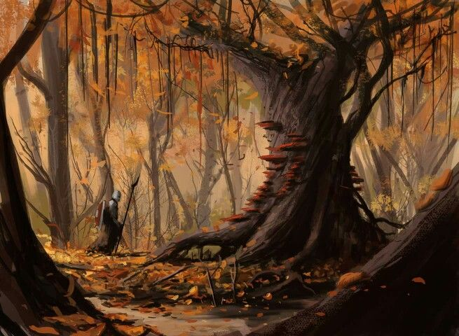

История Шесть
Глава первая: Растущее будущее

✦ Рыжие леса Тругиля — место, где собираются множество разных народов ✦
Центральный регион не завоёванных земель, Леса Тругилия или же Рыжие леса Тругилии, место где жили множество видов зверолюдей, разных особенностей и культур, и где то в глубинке этих лесов, возле большего озера в давние времена была создано заячье поселение, вскоре выросшее чуть ли не одно из самых больших деревень этих лесов, что в свои лучшие могли соперничать по воинственности даже с хищниками. Ныне, деревня была частью большой сетью деревень, у которой был достаточно весомый голос на совете этих самых деревень.
Имея большую численность население и достаточно хорошо развитое сельское хозяйство, деревня вечно росла и расширялась. В эти времена мирного рассвета после военных шествий, у Главы семьи, которого большинство ласково называли "Вожак", родилось потомство, из практически двух десятков ребятишек и одна из них отличилась даже при рождении, что изначально её восприняли как мальчика, который не так родился.
Девятый · Сын брата Вожака
Пирр — чувство справедливости и защиты бурлит сильнее всего в его душе, от чего и получал в детстве больше всего.
Пирр — чувство справедливости и защиты бурлит сильнее всего в его душе, от чего и получал в детстве больше всего.
Мирное время, детишки начали расти, мальчишки начали вырастать в будущих воинов, что защищают деревню, а также девочек, что были более маленькими версиями мальчиков, от чего и становились домохозяйками и матерями... Ну, это было у большинства, кроме "неё".
Родившись с врождённым гигантизмом и получившее говорящее имя "Элеутерия", означающий свободу выбора и пути в жизни, её сделали особенной в деревне, ей дали полную свободу выбора в жизни, становлением воином, матерью или даже претендовать на роль главы деревни, но в детстве она лишь развлекалась и радовалась каждому дню вместе со своими друзьями и родственниками, оставляя столь значимый выбор на будущее.
Шестая · Дочь Вожака
Элеутерия — «свобода». Имя, которое стало шуткой судьбы. Свободная по рождению, рабыня по жизни.
Элеутерия — «свобода». Имя, которое стало шуткой судьбы. Свободная по рождению, рабыня по жизни.
Пока в один на удивление дождливый день, в деревню не пришли приключенцы, что просили еды, тепла и крова, не за бесплатно. Положительный ответ со стороны "Вожака" не стал долго ждать и приключенцы начали жить неподалёку от дома главы. Оставаясь жить в столь большой деревне, было трудно не привлекать внимание, особенно, когда компания приключенцев была максимально разносторонней не только роду деятельности, но и расам.
Одиннадцатая · Дочь Вожака
Агния — добрая, уютная. Её готовка могла вылечить любую боль. Дом без неё — пустой. Дом без нас всех — пустой.
Агния — добрая, уютная. Её готовка могла вылечить любую боль. Дом без неё — пустой. Дом без нас всех — пустой.
И понемногу к ним начала тянуться детвора, любопытствуя и интересуясь жизнью за Лесами. В моментах игры и забавы переменились на сидения у кострища и выслушивания историй от их Барда-человека, который через мелодии и знанием их языка передавал приключения команды. Всё внимание детворы было приковано к ним, в особенности самой большой из них, что на свой малый возраст выглядела как уже взрослая зайчиха, её внимание была почти полностью украдено жрицей-эльфом и магом-орком их красотой магии, её полезности, а главное особенности.
Прошло время и наступил момент ухода приключенцев из деревни, они задержались дольше необходимого как раз таки из-за ребятишек, не желавшие их отпускать пока те не расскажут все их истории и пока "Элеутерия" не вкусит благи магии и божественного чуда. И всё-таки, без этих людей деревня стала будто тише и грустнее...
Первая · Старший сын Вожака
Никон — всегда был тем, на кого мы равнялись. Сильный, быстрый, ответственный. Я хотела быть как он. Думаю, все хотели. Он должен был стать главой.
Никон — всегда был тем, на кого мы равнялись. Сильный, быстрый, ответственный. Я хотела быть как он. Думаю, все хотели. Он должен был стать главой.
"Одиннадцатая-Агния, дочь "Вожака", добрый нрав, хорошие знания и очень, очень вкусная готовка." Продолжать жить в тишине и грусти после ухода приключенцев, было бы неправильно и дети решили, что им тоже нужна их собственная команда приключенцев и начали игры пышнее прежних, теперь у каждого были свои роли, свои цели и свои вдохновители образов.
Третий · Сын Вожака
Дакад — строгий, но ласковый. Он держал команду вместе. Всегда знал, что сказать. Даже когда мы проигрывали в играх. «Не опускай уши, Шестая».
Дакад — строгий, но ласковый. Он держал команду вместе. Всегда знал, что сказать. Даже когда мы проигрывали в играх. «Не опускай уши, Шестая».
Команд было много, около семи, и большая зайчиха попала в первую, как та, кто из первых предложила так играть. Состав первой команды состоял из целых двенадцати зайцев, хотя в остальных было больше. "Элеутерия" могла бы стать лидером в первой команде, но решила отдать этот пост сильнейшим по силе зайцам, старшим трём братьям и двум старшим сёстрам, оставив при себе шестое место отыгрывая роль жрицы.
Вторая · Старшая дочь Вожака
Синтия — краше неё были только звёзды. Она пела нам по вечерам. Когда я слышала её голос, мне казалось, что всё будет хорошо. Теперь я не могу вспомнить её песен.
Синтия — краше неё были только звёзды. Она пела нам по вечерам. Когда я слышала её голос, мне казалось, что всё будет хорошо. Теперь я не могу вспомнить её песен.
Остальные заняли числа от семи, до двенадцати, деля и даже копируя роли друг друга. Так и началась более задорное и радостное детство, продлившееся вплоть до подросткового возраста, где роли стали негласными именами между друг другом, а простые игры перешли в серьёзное обучение.
Восьмой · Сын Вожака
Влас — загадочный и милый. Не открывался всем, но когда открывался — это было как подарок. Я жалею, что не узнала его лучше.
Влас — загадочный и милый. Не открывался всем, но когда открывался — это было как подарок. Я жалею, что не узнала его лучше.
"Двенадцатый-Ликург сын брата "Вожака", сильный для своего возраста, шустрый, немного глупенький, но очень дружелюбный." Как только начал наступать возраст согласий и поиска партнёров, компания друзей и родственников продолжала следовать своему детскому делу, некоторые уже могли с гордостью держать меч в руках, другие стрелять из лука, а некоторые даже колдовали и сотворяли чудеса, что и не отличило от других "Элеутерия", которая уже могла с помощью базовых молитв восстанавливать самые простые раны, небольшие головные боли и убирать усталость.
Пятая · Дочь Вожака
Мелина — её голос мог успокоить бурю. Когда она говорила, весь мир затихал. Я не знаю, где она сейчас. Надеюсь, она жива.
Мелина — её голос мог успокоить бурю. Когда она говорила, весь мир затихал. Я не знаю, где она сейчас. Надеюсь, она жива.
Всё шло прекрасно, деревня продолжала расцветать, рождались новые детишки, территории для жилья так же увеличились... Как и начали наступать новые проблемы. Совет деревень травоядных созвал сборы добровольцев для подготовки к конфликту с деревнями из хищного совета, что оказывается изначально отделились от основного Совета и решили забрать к себе во владение более слабыми деревнями.
Седьмая · Дочь брата Вожака
Ия — она всегда бежала вперёд. Никогда не оглядывалась. Я завидовала ей. Теперь я понимаю, что она просто боялась смотреть назад.
Ия — она всегда бежала вперёд. Никогда не оглядывалась. Я завидовала ей. Теперь я понимаю, что она просто боялась смотреть назад.
Фактически, в конфликте участвовали большинство травоядных и малая часть хищников, но опасность для первых была очень даже большой и именно поэтому деревня зайцев ответила Совету согласием на участие в данном конфликте и начались сборы добровольцев. Первые кто ответил, как добровольцы была та самая компания, состоящая из двенадцати зайцев, которая всей своей душой и сердцем хотели получить приключения и опыт. Через небольшие споры и разногласия со стороны "Вожака", команда смогла получить добро.
Четвёртый · Сын Вожака
Данакт — волевой и забывчивый. Он никогда не отходил от Дакада. Я думаю, он просто боялся остаться один.
Данакт — волевой и забывчивый. Он никогда не отходил от Дакада. Я думаю, он просто боялся остаться один.
"Четвёртый-Данакт, сын "Вожака", волевой и забывчивый, никогда не отходит Дакада и старается быть как он."
Десятая · Дочь брата Вожака
Анфиса — видела красоту в процессе, а не в результате. Всегда объясняла, как всё устроено. Иногда я не понимала её. Но слушала.
Анфиса — видела красоту в процессе, а не в результате. Всегда объясняла, как всё устроено. Иногда я не понимала её. Но слушала.
Страх, что гложет изнутри
Остаться ненужной никому, ни в виде предмета, ни в виде живого существа. Потерять последнее что у неё осталось — веру в богиню. Вернуться домой. Она боится, что однажды проснётся и поймёт — она уже не помнит, какой была до цепей.
«Я лечу других, но кто исцелит меня? Моя вера — единственное, что осталось. Если и её отнимут... я стану пустой оболочкой».
Смысл нахождения в команде
Персонаж
Некуда идти, есть Хозяин(Хозяйка). Хозяин не бьёт, не мучает... Пока что.
Игрок
- Восстановить душу и разум Шестой — Сложно
- Нахождение собственного имени — Средний
- Увидеть вторую — Неизвестно
- Изменить смысл жизни — Сложно
- Видеть как морально умирает Шестая — Легко
«Моё имя — Шесть. Когда-то меня так звали в играх. Теперь это единственное, что у меня осталось. Вместе с верой. Этого достаточно... пока что».